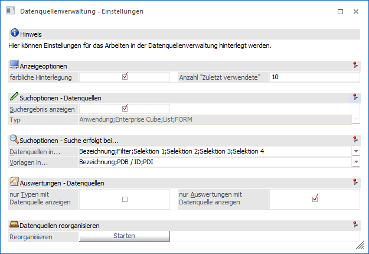
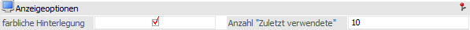
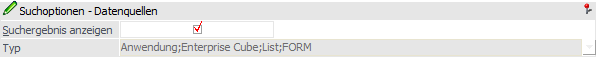
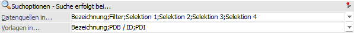
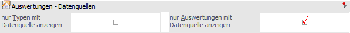
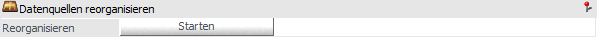

Durch die Anwahl des Buttons "Einstellungen" im Programm Datenquellenverwaltung können individuelle Einstellung für die Anzeige und das Programmverhalten getroffenen werden.

Anzeigeoptionen

Ø farbliche Hinterlegung
Mit Hilfe dieser Option kann definiert werden, ob eine farbliche Hinterlegung der Datenquellen gewünscht ist.
Ø Anzahl "Zuletzt verwendete"
An dieser Stelle kann die Anzahl der zuletzt verwendeten Datenquellen (Snapshots, Views und MasterViews) hinterlegt werden.
Suchoptionen - Datenquellen

Ø Suchergebnis anzeigen
An dieser Stelle kann die Darstellung des Datenquellen-Suchergebnisses (Register "Datenquellen") parametrisiert werden:
ü Option ist aktiviert
(Standard)
Nach Auslösen der Suche wird automatisch der Bereich
"Suchergebnis" gebildet und alle gefundenen Datenquellen in diesem
aufgelistet.
ü Option ist deaktiviert
Es wird
innerhalb der Typen und Auswertungen navigiert und die erste gefundene
Datenquelle angezeigt (per Button "Anzeigen" kann die Suche fortgeführt werden).
Ob hierbei alle Typen berücksichtigt werden sollen, kann in der nachfolgenden
Einstellung definiert werden.
Ø Typ
Wurde die Option "Suchergebnis anzeigen" deaktiviert, so kann hier hinterlegt werden, in welchen Typen die Suche erfolgen soll. Während der Suche werden nicht aktivierte Typen in der Datenquellenverwaltung ausgeblendet.
Suchoptionen - Suche erfolgt bei…

Ø Datenquellen in…
An dieser Stelle kann über eine Mehrfachauswahl definiert werden, in welchen Datenquellenfeldern nach dem Suchbegriff gesucht werden soll. Hierbei stehen folgende Auswahlen zur Verfügnug:
ü Bezeichnung
ü Filter
ü Selektion 1 bis 4
Ø Vorlagen in…
An dieser Stelle kann über eine Mehrfachauswahl definiert werden, in welchen Vorlagenfeldern nach dem Suchbegriff gesucht werden soll. Hierbei stehen folgende Auswahlen zur Verfügnug:
ü Bezeichnung
ü PDB / ID
ü PDI
Auswertungen - Datenquellen

In diesem Bereich kann der Inhalt des Registers "Datenquellen" gesteuert werden.
Hinweis
Die Optionen können nur dann verändert werden, wenn die Einstellungen mit Fokus auf dem Register "Datenquellen" liegend geöffnet werden. Zusätzlich muss die Datenquellenverwaltung in der WinLine INFO geöffnet worden sein.
Ø nur Typen mit Datenquelle anzeigen
Durch Aktivierung dieser Option werden in der Tabelle "Typen" des Register "Datenquellen" nur jene Untereinträge der Auswertungstypen (Programmbereiche / Cubes / Listen) angezeigt, zu welchen es bereits erzeugte Datenquellen gibt.
Ø nur Auswertungen mit Datenquelle anzeigen
Wenn diese Option aktiviert wird, so werden in der Tabelle "Auswertungen" des Registers "Datenquellen" nur jene Auswertungen dargestellt, zu welchen es bereits erzeugte Datenquellen gibt.
Datenquellen reorganisieren

Ø Reorganisieren
Durch Anwahl des Buttons "Starten" werden folgende Tätigkeiten ausgeführt:
ü Löschen von temporäre Datenquellen
Hinweis
Bei der Ausgabe einer Auswertung als z.B. Cube wird immer eine Datenquelle des Typs "Snapshot" erzeugt, auch wenn der Datenquellen-Button auf "keine Datenquelle" gesetzt wurde. Bei diesen Datenquellen handelt es sich um sogenannte "temporäre Datenquellen".
ü Löschen von Einträgen des Typs "Zuletzt verwendet" und "Favoriten", wenn die Datenquelle (Snapshot, View oder MasterView) nicht mehr vorhanden ist
ü Löschen all jener Inhalte aus den Datenquellen-Tabellen, zu denen keine Datenquelleninformation existiert
ü Löschen von leeren Datenquellen-Tabellen bzw. View / MasterViews aus der WinLine BI-Datenbank, wenn keine Datenquelleninformation für jeweilige Tabelle / View vorliegt
ü Löschen von Tabellenerweiterungs-Tabellen aus der WinLine BI-Datenbank, wenn keine Datenquelleninformation für jeweilige Tabelle / View vorliegt
Achtung
Der Button nur Volladministratoren oder Benutzern mit dem Teiladministrationsrecht "Datenadministration" zur Verfügung steht.
Buttons
Ø Ok
Durch Anwahl des Buttons "Ok" bzw. der Taste F5 werden die Einstellungen gespeichert und direkt angewendet.
Ø Ende
Bei Anwahl des Buttons "Ende" bzw. der Taste ESC wird das Fenster geschlossen und alle nicht gespeicherten Eingaben verworfen.